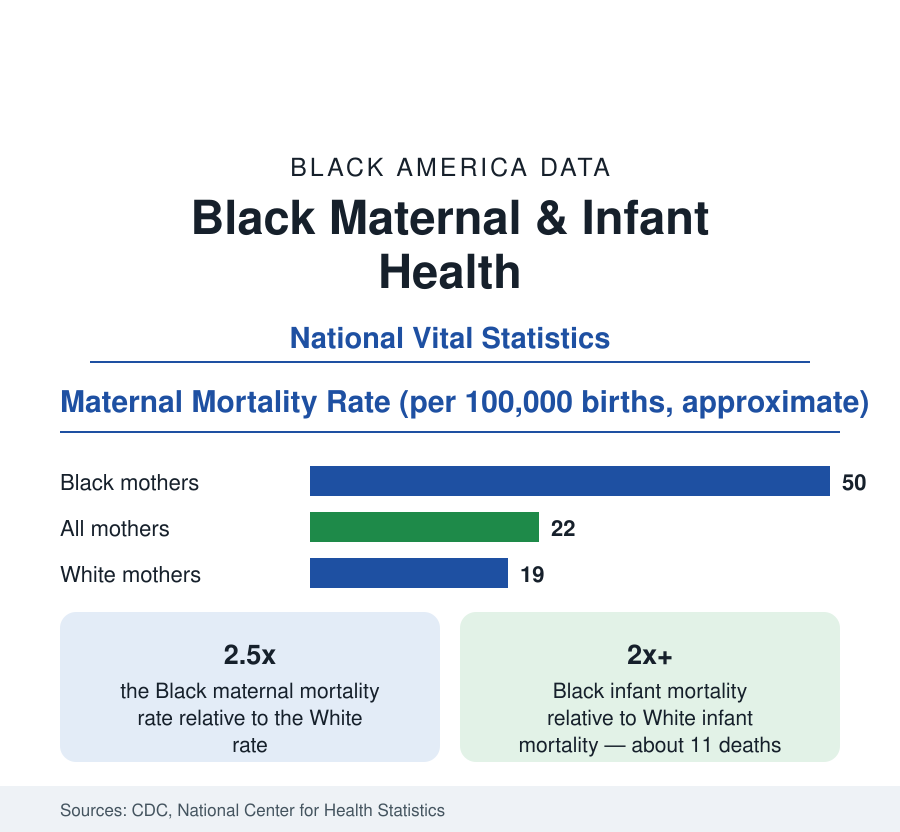

Black Public Health
Black Maternal and Infant Health: Mortality and Birth Outcomes
Black mothers die from pregnancy-related causes at about two and a half times the White rate, and Black infants at more than twice the White rate. The CDC vital statistics.

The statistics of birth are the most closely watched in Black public health, and they are among the most adverse: Black women die from pregnancy-related causes at about two and a half times the rate of White women — roughly 50 deaths per 100,000 live births against about 19 — and Black infants die in their first year at more than twice the White rate, about 11 per 1,000 births against about 4.5. These figures, from the National Vital Statistics System, are the subject of sustained federal attention and of dedicated review processes in most states. This article reports the data: the rates, the causes, the distribution, and the trend.
Maternal Mortality: Definitions and Causes
Maternal mortality counts deaths during pregnancy or within a year after its end, from causes related to or aggravated by the pregnancy, per 100,000 live births; the related but narrower pregnancy-related measure is compiled by state review committees that read every case file. The committees' published findings establish the clinical picture: the leading causes are cardiovascular conditions, hemorrhage, infection, hypertensive disorders including preeclampsia, and — a rising share in the recent data — mental-health conditions. The committees further find that a large majority of the deaths they review, across all races, were determined preventable with reasonable changes in patient, provider, or system factors. The Black excess is not explained by a different cause profile: Black mothers die of the same causes, at higher rates, at nearly every age and education level.
The Persistence Across Income and Education
The maternal data contain the finding that most distinguishes them from the other statistics in this reference: the gap does not close with advantage. Black women with college degrees record pregnancy-related mortality above that of White women who did not finish high school, in the analyses that cross-tabulate the vital statistics by education; Black mothers in the highest income brackets record worse birth outcomes than White mothers in the lowest. Researchers describe this as the signature of cumulative physiological stress — the weathering hypothesis, which holds that sustained social and economic stress accelerates reproductive aging — interacting with differences in care quality and the treatment of symptoms. Whatever the mechanism's final accounting, the descriptive fact is settled in the data and governs how this reference reports birth outcomes: as a gap that income statistics alone cannot be used to predict away.
Infant Mortality and Birth Outcomes
Infant mortality decomposes into deaths in the first month — driven principally by preterm birth and congenital conditions — and deaths across the rest of the first year. Black infants are more likely to be born early: the preterm birth rate for Black mothers runs at about 15 percent of births, against about 9 to 10 percent for White mothers, and low birthweight shows a similar ratio. Prematurity is the engine of the infant mortality gap: extremely preterm infants account for a large share of all infant deaths, and the Black excess in early delivery propagates through neonatal intensive care into the mortality statistics. Sudden unexpected infant death, the second great component, also records rates roughly double among Black infants, with safe-sleep environment the principal documented correlate.
Geography and the Care Landscape
The rates are not nationally uniform. State-level Black maternal and infant mortality varies widely, and the highest figures concentrate in the South and in rural counties of every region — the same map as the provider-supply data, in which maternity-unit closures have created obstetric deserts across rural America, with Black rural counties among the most affected. Urban data show their own pattern: large cities with major academic medical centers record better Black birth outcomes than their state averages, and the variation among hospitals within single cities — where Black mothers are disproportionately served by a subset of facilities with measurably worse outcomes on the published quality data — is one of the most active findings in the current literature.
The Trend and the Response
Both rates worsened in the pandemic years, when maternal mortality spiked nationally, and have improved since in the provisional data, without reaching the levels that federal targets set for them. The policy apparatus built around the statistics is extensive: state maternal mortality review committees now operate nearly everywhere, federal programs fund perinatal quality collaboratives in hospitals, postpartum Medicaid coverage has been extended to a full year in most states — a change aimed squarely at the large share of deaths that occur after the traditional six-week coverage window — and community-based models, including midwifery and doula care, are being evaluated in program data. The infant side has its own programs in safe sleep, home visiting, and preterm prevention.
Summarized: about 50 maternal deaths per 100,000 births against 19; about 11 infant deaths per 1,000 against 4.5; a prematurity rate half again the national figure; and a gap that education and income do not erase. These are the statistics by which the rest of this section's health data — hypertension's prevalence among women of childbearing age, diabetes, coverage, access — should be weighted, because their consequences are measured here.
More in Black Public Health
Hypertension Among Black Adults: Prevalence, Control, and Consequences
About 55 percent of Black adults have hypertension — the highest rate of any U.S. group. Prevalence, onset, control, and the stroke, heart, and kidney consequences in the data.
Diabetes Among Black Adults: Prevalence and Complications
Nearly one in five Black adults has diabetes, diagnosed or undiagnosed — and its complications fall with particular weight. The CDC data on prevalence, control, and outcomes.
Black Life Expectancy: The Gap at Birth and Its Causes
Black life expectancy at birth is about 73 years, roughly five years below the national figure — the summary measure of every health gap in this section. The CDC data.
Source: CDC, National Center for Health Statistics, National Vital Statistics System; CDC Maternal Mortality Review; March of Dimes Report Card.